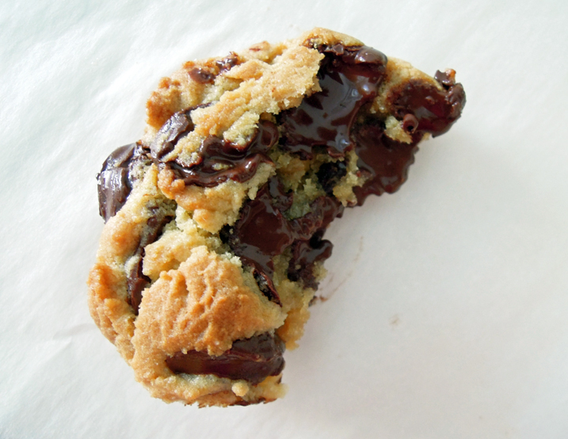
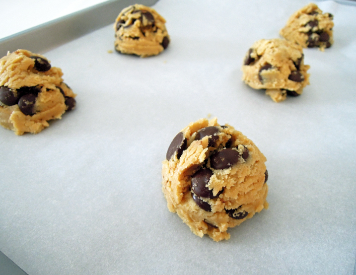

Alton Brown proves that all chocolate chip cookies aren’t created equal.
Recipe courtesy of Alton Brown
Show:Good Eats Episode:Three Chips for Sister Marsha

Alton Brown’s The Chewy Chocolate Chip Cookie Recipe
Total:
1 hr 50 min
Prep:
20 min
Inactive:
1 hr
Cook:
30 min
Yield:
2 dozen cookies
Ingredients
8 ounces unsalted butter
12 ounces bread flour
1 teaspoon kosher salt
1 teaspoon baking soda
2 ounces granulated sugar
8 ounces light brown sugar
1 large egg
1 large egg yolk
1 ounce whole milk
1 1/2 teaspoons vanilla extract
12 ounces semisweet chocolate chips
Directions
Melt the butter in a 2-quart saucepan over low heat. Set aside to cool slightly.
Sift together the flour, salt and baking soda onto a paper plate. Pour the butter into your stand mixer's work bowl. Add the sugar and brown sugar and beat with the paddle attachment on medium speed for 2 minutes.
Meanwhile, whisk together the whole egg, the egg yolk, milk and vanilla extract in a measuring cup. Reduce the mixer speed and slowly add the egg mixture. Mix until thoroughly combined, about 30 seconds.
Using the paper plate as a slide, gradually integrate the dry ingredients, stopping a couple of times to scrape down the sides of the bowl. Once the flour is worked in, drop the speed to “stir” and add the chocolate chips. Chill the dough for 1 hour.
Preheat the oven to 375 °F and place racks in the top third and bottom third of the oven.
Scoop the dough into 1 1/2-ounce portions onto parchment-lined half sheet pans, 6 cookies per sheet. Bake 2 sheets at a time for 15 minutes, rotating the pans halfway through. Remove from the oven, slide the parchment with the cookies onto a cooling rack and wait at least 5 minutes before devouring.

Unbaked Chocolate Chip Dough